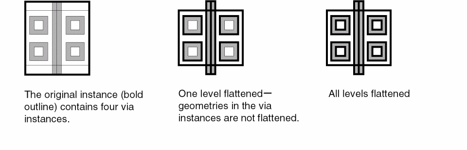

Flattening Instances
To display the detail in all the instances that you want to flatten:
-
In the layout window, choose Options – Display.
The Display Options form opens. - Set Display Controls to display the detail in all instances you want to flatten.
- Click OK.
-
Choose Edit – Hierarchy – Flatten.
The Flatten form opens. - Set the Hierarchy Level to one level, displayed level, or user level.
- Use the Preserve options to preserve the required information and attributes.
-
Click OK.
The instance is flattened as per the specified settings.

When flattening Pcell instances, you can delete fluid shapes by enabling the deleteFluidShapes environment variable.
Related Topics
Return to top